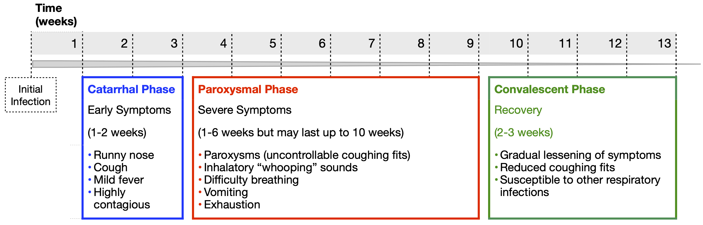
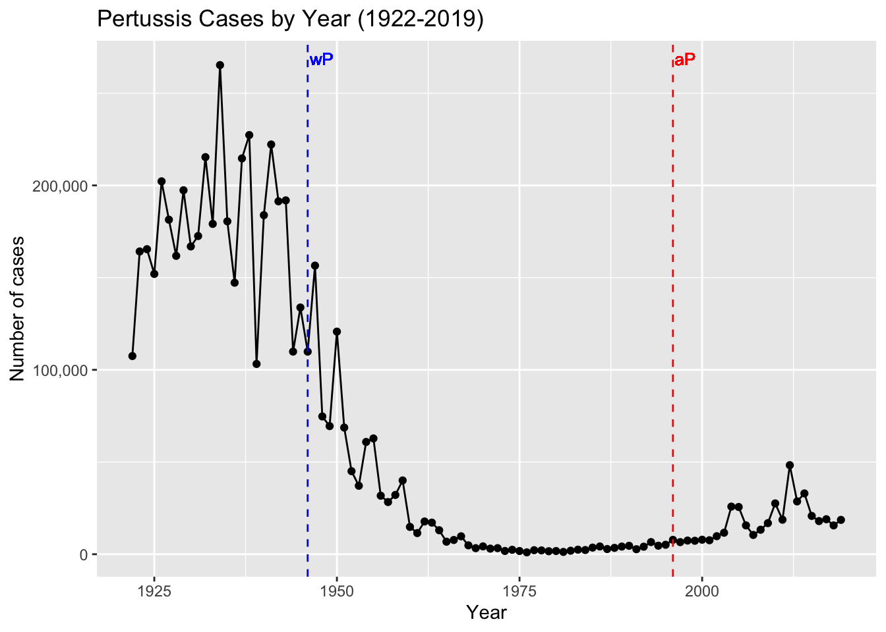

Introduction to Pertussis
Educational material for the CMI-PB project
Barry J. Grant ![]()
Steven Kleinstein
Bjoern Peters
Background
Pertussis, or whooping cough, is a highly contagious lung infection caused by the bacteria Bordetella pertussis. This endemic disease is one of the leading causes of vaccine-preventable deaths worldwide with an estimated 16 million cases and 200,000 associated infant deaths annually (Black et al. 2010). Pertussis can infect people of all ages but is most severe and life threatening for infants under a year old (Healy et al. 2015). This is due to both the small size of their airways and because they are too young to have completed their full course of vaccinations.
Transmission occurs primarily through bacteria laden respiratory droplets produced when an infected individual coughs and sneezes (Warfel, Beren, and Merkel 2012). Inhaled bacteria can then attach and colonize ciliated cells of the respiratory tract in a new host (Figure 1). Proliferating bacteria release a potent cocktail of toxins that both damage cilia and impede the immune response to infection (Figure 1) (“Pinkbook: Pertussis (CDC)” 2022).

These damaged cilia can no longer effectively transport mucus and foreign particles out of the lungs. This leads to mucus build up and contraction of the airways leading to violent, uncontrollable coughing fits. As the cough becomes more severe it may be followed by a “whooping” sound upon inhalation. These characteristic symptoms can persist for many weeks giving rise to the common disease names of whooping cough and the hundred day cough. In this first vignette we focus largely on pertussis pathogenesis and history of control measures. This is important because, as discussed below, despite high levels of vaccination many countries are now experiencing a significant increase in pertussis cases with large outbreaks now once again a major public health concern.
Disease pathogenesis
Pertussis is primarily a toxin-mediated disease (“Pinkbook: Pertussis (CDC)” 2022). The bacteria produce toxins and other molecules (Table 1) that damage cilia, suppress the immune response, disrupt intracellular signaling, and cause inflammation of the respiratory tract.
| Bacterial component | Biological function | Acellular vaccine component* |
|---|---|---|
| Filamentous hemagglutinin (FHA) | An adhesin molecule that helps the bacterium attach to the host’s respiratory cells. FHA is also involved in immune evasion, making it a critical component of the vaccine. | Yes |
| Pertactin (PRN) | An adhesin protein used to bind to host cells. It also plays a role in the bacterium’s ability to resist the host’s immune response. | Yes | | |
| Fimbriae (FIM) | Additional adhesin proteins that also suppress the initial inflammatory response to infection | Yes |
| Pertussis toxin (PT) | A secreted toxin that catalyzes ADP ribosylation of host G-proteins, which in turn causes a number of effects including increased levels of cAMP and reduced ATP levels disrupting host cell signaling, coordination and physiology. PT also induces lymphocytosis and pancreatic islet cell activation. Antibodies to PT are associated with clinical immunity to pertussis. | Yes: inactivated toxin |
| Adenylate cyclase toxin (ACT) | Cytotoxin that synthesizes cAMP in host cells, which in turn disrupts host cell physiology. Anti-inflammatory effect through action on host immune cells including inhibition of phagocytic function | Not included due to protein stability issues. |
| Dermonecrotic toxin (DNT) | A toxin that activates host Rho GTPases leading to changes in host cell morphology and formation of necrotic lesions leading to dermal necrosis and vasoconstriction. | Not included as DNT is a weak immunogen and antibodies to it are nonprotective in animal challenge tests. |
| Tracheal colonization factor (TCF) | An adhesion peptidoglycan that is produced during cell wall remodeling. | No |
| Bordetella resistance to killing protein A system (BrkA) | An outer-membrane protein involved in adherence and complement resistance. Similar in structure to PRN. Antibodies to BrkA augment killing of B pertussis. | No |
| Lipopolysaccharide (LPS) | Structural component of bacterial outer membrane with proinflammatory activity linked to resistance to host defense molecules. | No |
| Tracheal cytotoxin (TCT) | A toxin inducing paralysis and destruction of respiratory ciliated epithelium. | No |
| Endotoxin | Similar to endotoxin in other Gram-negative organisms. Contributes to fever and local reactions. | No |
| BvgAS system | Global regulator of expression of most B pertussis virulence factors. | No |
Disease progression
The incubation period for pertussis is typically 7 to 10 days, but it can range from 5 to 21 days. Once the bacterial concentration increases, damage to the respiratory tract causes the first mild symptoms. These mimic a common cold including a runny nose, low-grade fever, and a cough. This is called the catarrhal phase and it lasts about two weeks (Figure 2). At this point, pertussis is very contagious due to the presence of a high concentration of bacteria in the respiratory tract that makes them easy to aerosolize.

The catarrhal phase is followed by the more severe paroxysmal phase, which lasts another one to six weeks. Even though the immune system is killing and clearing the bacteria during this phase, symptoms persist from the damage caused by their released toxins. The most notable symptoms include paroxysms (uninterrupted coughing fits) followed by difficulty breathing. The violent force of these paroxysms can cause vomiting, a collapsed lung and broken ribs. Rather than having violent coughing fits or making a whooping noise, really young infants often have gasping, cyanosis and life threatening apnea (pauses in breathing). These symptoms typically persist for several weeks. Finally, the convalescent phase begins, which lasts between two to three weeks, during which the cough slowly improves, the paroxysms and whooping fade away, and the airway heals. It is best to diagnose pertussis during the early catarrhal phase as treatment with antibiotics is most effective during this time.
History
The first pertussis epidemic was reported in Paris in the year 1578 (Holmes 1940) (James D. Cherry 2015). The French physician Guillaume de Baillou studied this epidemic with his observations published posthumously in 1640 (Figure 3). In the British Isles, the illness was called “the kink” (a Scottish term for fit or paroxysm), and in Northern Europe it was known as “kindhoest” (a Teutonic word for child cough) (J. D. Cherry 1999a). Other early names include hooping cough, tusis perennis, tussis epidemica infantum, and tussis quinta (James D. Cherry 2015) (J. D. Cherry 1999a).
TO DO: Quote Baillou’s early description text, which is rather graphic and and still holds true for the disease today. Include the timeline history with link-out (“read more”) covering these interesting historical notes.
The name pertussis (from the Latin for “intensive cough”) was first introduced in England in 1679 (Lapin 1943). Working at the Pasteur Institute in Paris in 1900, Jules Bordet and Octave Gengou observed the causative bacteria in the sputum of a patient with pertussis, and in 1906 they reported its first isolation (Bordet and Gengou 1906). It was then named Bordet-Gengou bacillus, later Haemophilus pertussis, and finally Bordetella pertussis. During this period of the 20th century pertussis was one of the most common childhood diseases and a major cause of childhood mortality (J. D. Cherry 1999b). In the United States alone there were often more than 200,000 cases reported annually (“Pertussis Surveillance: Cases by Year (CDC)” 2023a). This figure is likely an underestimate as pertussis, even today, remains underreported and misdiagnosed.
Since pertussis was such a devastating disease, vaccine development was considered soon after B. pertussis isolation. In the 1930s, Pearl Kendrick and Grace Elderling, working at the Michigan Department of Health laboratory, developed an effective chemically inactivated whole-cell vaccine (Kendrick and Eldering 1936) (Shapiro-Shapin 2010). The vaccine became widely available in the United States in 1940 and was approved by the American Academy of Pediatrics in 1943 (Shapiro-Shapin 2010). Five years later a combination vaccine that included diphtheria and tetanus toxoids in addition to inactivated B. pertussis (so called “DTwP” vaccine) was first licensed and became the formulation of choice until 1992 (Pittman 1991). This vaccine was highly effective with the reported annual incidence of pertussis dropping from a high of 150–250 cases/100,000 persons (>200,000 cases) to a low of 0.5 cases/100,000 (<1,000 cases) after widespread vaccination (“Pertussis Surveillance: Cases by Year (CDC)” 2023b).
The history of human interaction with Bordetella pertussis is in our view fascinating. As described in our supplementary timeline figure it touches on major milestones in the development of immunology, large scale vaccination programs, and sadly growing public missinformation and vaccine hesitancy.
Pertussis vaccines
Pertussis vaccination is, in general, highly effective at preventing the disease. The first generation of pertussis vaccines were whole-cell vaccines (wP). These used inactivated B. pertussis cells to stimulate an immune response and subsequent immunity (Figure 4).

The wP vaccines proved highly effective in reducing the incidence of severe disease. During the 6-year period from 1940 through 1945, more than 1 million cases of pertussis were reported, an average of 175,000 cases per year (approximately 150 cases per 100,000 population) (“Pertussis Surveillance: Cases by Year (CDC)” 2023b). Following wP vaccine introduction in 1945, pertussis incidence gradually declined, reaching 15,000 reported cases in 1960 (approximately 8 per 100,000 population). By 1970, annual incidence was fewer than 5,000 cases per year and, between 1980 and 1990, an average of 2,900 cases per year were reported (approximately 1 per 100,000 population) (Figure 5). Despite these successes, early wP vaccines were mired in controversy due to their association with adverse events, including fever, local reactions at the injection site, and in rare cases, neurological complications 5,13,14. This led to reduced public acceptance and uptake of the vaccine necessitating the need for safer alternatives.

The switch to acellular pertussis vaccines
Traditional whole cell vaccines are reactogenic causing fever and local reactions in many vaccines (Decker and Edwards 2021a). To address this issue in the 1980s and 1990s, acellular pertussis vaccines (aP) were introduced, consisting of up to five purified antigens of B. pertussis (Figure 4 and Table 1). The rationale behind this development was to reduce the risk of adverse events by eliminating unnecessary bacterial components while maintaining the vaccine’s efficacy. Indeed, these vaccines demonstrated a superior safety profile compared to their whole-cell counterparts (Cody et al. 1981). These aP vaccine formulations have subsequently been adopted in most Western countries including the United States.
aP vaccine composition
The current aP vaccine used in the United States is part of combination vaccines that include immunization against tetanus and diphtheria (the T and D in Table 2). The two primary vaccines differ in their relative concentrations of these components and are called DTaP and Tdap (for diphtheria, tetanus, and acellular pertussis). DTaP is intended for children under 7 years of age and Tdap for older children and adults. This later Tdap vaccine contains lower doses of diphtheria and pertussis antigens and is typically intended to reinforce immunity (i.e. as a boost vaccine). The pertussis portion of these vaccines typically contain purified pertussis toxin (PT), filamentous hemagglutinin (FHA), fimbriae (FIM) and pertactin (PRN) protein antigens (see Table 1 and Figure 4). These components work in concert to stimulate the immune system to produce a response that will be effective against infection. By including multiple antigens, the vaccine can provide broader protection against different strains of B. pertussis that might vary in the expression of these components. It’s worth noting that the specific formulation of aP vaccines can vary by manufacturer and country. For instance, some formulations might not include all the components listed above, but the vaccines used in the United States generally include all four (Table 2).
| Vaccine Type | Trade Name | Manufacturers | Components | Concentrations |
|---|---|---|---|---|
| DTaP | Daptacel | Sanofi Pasteur | Detoxified PT | 10 µg |
| FHA | 5 µg | |||
| Pertactin | 3 µg | |||
| FIM | 5 µg | |||
| Infanrix | GlaxoSmithKline | Inactivated PT | 25 µg | |
| FHA | 25 µg | |||
| Pertactin | 8 µg | |||
| Pentacel | Sanofi Pasteur | Detoxified PT | 20 µg | |
| FHA | 20 µg | |||
| Pertactin | 3 µg | |||
| FIM | 5 µg | |||
| Tdap | Adacel | Sanofi Pasteur | Detoxified PT | 2.5 µg |
| FHA | 5 µg | |||
| Pertactin | 3 µg | |||
| FIM | 5 µg | |||
| Boostrix | GlaxoSmithKline | Inactivated PT | 8 µg | |
| FHA | 8 µg | |||
| Pertactin | 2.5 µg |
The resurgence of pertussis cases
The number of pertussis cases has been gradually increasing in the United States and other Western countries since the early 1990s (Figure 5). Of particular concern, there have been a number of large epidemic peaks in disease observed since the mid-2000s (Figure 6). For example, a total of 48,277 pertussis cases were reported in 2012, the largest number since the mid-1950s.
There are likely multiple factors contributing to this recent significant increase in the incidence of pertussis. These include changes in diagnostic testing, heightened recognition and reporting of pertussis cases, and mutation of the bacteria. However, these have not been supported by genetic, experimental and epidemiological data [ref]. The main hypothesis therefore to explain this phenomenon is the apparent waning of vaccine-induced immunity in infants primed with aP compared to wP in countries, including the United States, that have transitioned to acellular vaccines. However, it is currently unclear why these newer aP vaccines might be less effective long term than their older wP counterparts.
The differences in immune responses: aP vs. wP priming
Although aP vaccines exhibit fewer adverse reactions and provide good protection in the first few years after vaccination (Decker and Edwards 2021b), the duration of protection appears to be shorter than expected. Specifically, an increase in pertussis outbreaks has been reported in various countries that switched from wP to aP vaccines (Decker and Edwards 2021b) (Diavatopoulos and Edwards 2017). Many of these outbreaks occurred among children who only received aP vaccines. As a result, multiple studies about waning immunity post-aP vaccination have been conducted (Klein et al. 2012) (Klein et al. 2016) (Witt et al. 2013) (Gambhir et al. 2015). These include the characterization of differences in the immune response against aP and wP vaccines (Wilk et al. 2019) (Ross et al. 2013) (Lee et al. 2018) (Silva Antunes et al. 2018) (Silva Antunes et al. 2020) (Silva Antunes et al. 2021) (Schure et al. 2013) (Schure et al. 2012). These have noted differences in polarization and proliferation of T cell responses in adults originally vaccinated (primed) with aP vs. wP (Aase et al. 2014) (Silva Antunes et al. 2018) (Figure 7). However, it remains unclear how this difference in immune responses is maintained over time between aP and wP primed vaccinees, despite subsequent Tdap booster vaccination.

Beyond these observations further study is required to better understand the type of immune responses that yield optimal, long-lasting protection and the underlying mechanisms responsible for this protection.
Next steps in the era of systems vaccinology
Why is this vaccine-preventable disease on the upswing and how can we effectively respond to limit pertussis outbreaks? Clearly, further research is needed to fully elucidate the causes of waning protection before the best pathway forward can be determined. In particular, more complete data on host responses to vaccination and infection are needed to help design the most effective vaccine and vaccination program.
New approaches such as systems vaccinology, that combine systems biology and genomics, are ideally placed to provide a more holistic picture of protective pertussis-specific immune responses. In this vein, the new and ongoing CMI-PB project (Shinde et al. 2023) aims to provide the scientific community with this very information and evaluate differences over time in wP and aP vaccinated individuals (Figure 8). This project integrates different biological readouts including transcriptomic, proteomic, and cytometric data to broadly define the immune state of large groups of individuals, and to define changes in a pre- and post-vaccine setting. In particular, CMI-PB tracks and makes freely available long-term humoral and cellular immune response data for a large number of individuals who received either DTwP or DTaP combination vaccines in infancy followed by Tdap booster vaccinations.

CMI-PB project
Collectively, this data comprise a comprehensive, high-quality, and freely accessible resource regarding Pertussis booster vaccination. Critically, the CMI-PB project encourages community participation through so-called “computational prediction challenges” (Figure 9). These prediction challenges serve as a platform for testing and improving computational models of immunity, encouraging collaboration and discussion, and ultimately advancing the understanding of immune responses to vaccinations. The challenges are open to various labs, researchers, and, in later challenges, members of the public.

These prediction challenges (Figure 9) are designed to stimulate collaborative efforts, enabling faster advancement in scientific knowledge than could be achieved by individual groups. CMI-PB generates experimental data explicitly for model evaluation. This data is released annually, and associated contests are organized to evaluate the performance of computational models developed by participating teams. Participants are given a list of questions related to predicting immune responses, with the predictions to be made in the form of ranking readouts from the highest to the lowest response in the tested donors. The predictions are evaluated by independent researchers using statistical methods like Spearman correlation and ROC curve analysis. This approach facilitates constructive discussions between modelers and experimentalists based on transparent metrics. Through these challenges, the CMI-PB project aims to address common challenges in developing computational models for biological applications, such as testing their generalizability and predictive performance, especially in the face of high-dimensional data and inter-individual variability. The challenges are organized annually, with the inaugural challenge having taken place in May 2022. The project commits to organizing four annual challenges, with each subsequent challenge aiming to engage a broader segment of the scientific community and the public (Table 3).
| Challenge | Participants | Size of training dataset | Size of test dataset | Current status |
|---|---|---|---|---|
|
CMI-PB consortium | 60 (28 aP, 32 wP) | 36 (19 aP, 17 wP) | Concluded May 2022 |
|
Invited experts | 96 (47 aP, 49 wP) | 23 (13 aP, 10 WP) | Announced Aug 2023 |
|
Public | 119 (60 aP, 59 wP) | 32 (16 aP, 16 WP) | Announced Jan 2024 |
|
Public | 151 (76 aP, 85 wP) | 32 (16 aP, 16 wP) | Announced Dec 2024 |
Learning more about CMI-PB
Further introducing and describing the CMI-PB project is the subject of our next vignette. In broader terms, the remaining challenge will be to translate this new wealth of knowledge into both improved understanding of immune mechanisms and new intervention strategies to curb the apparently increasing frequency of B. pertussis infection.